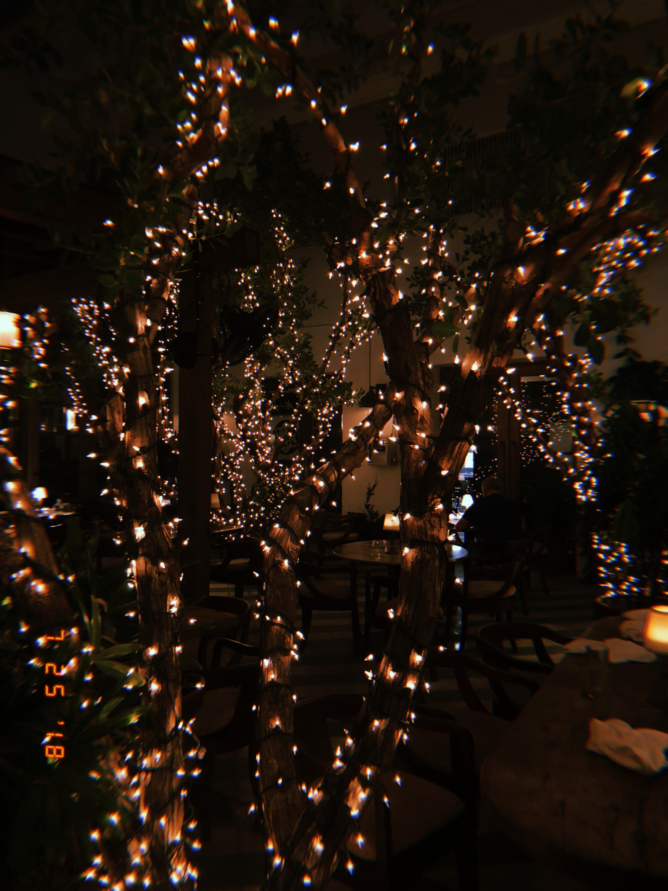
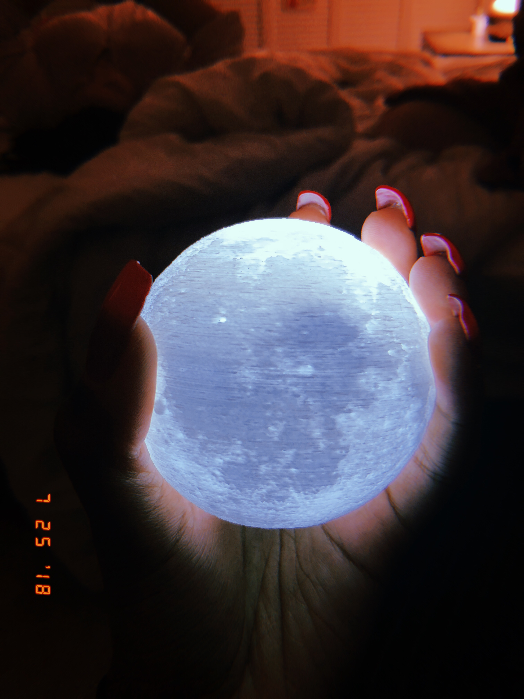
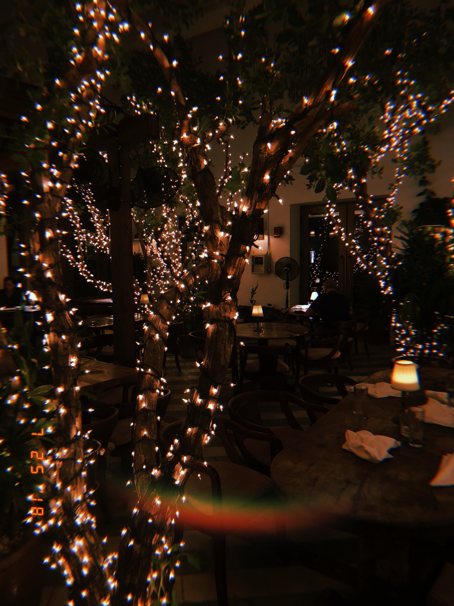

/


When I'm not sleeping, I'm taking pictures.
Here are some images captured at night all over the world.
Enjoy:)
When I'm not sleeping, I'm taking pictures.
Here are some images captured at night all over the world.
Enjoy:)